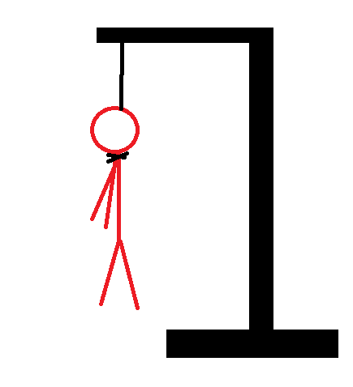
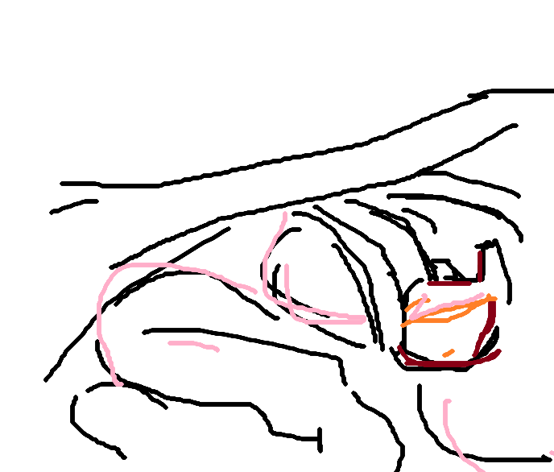

22

>I’m so tired I worked for like 14 hours. There were sticky kids all over the lobby for the entire time Like ugh! I know hurt people have children too, but like yuck dude, get your stinky ugly, poopy kid out out of the lobby. And you’re not gonna believe this I get home and I have a sore friggin throat. Fuck my life I guess.
Some people make me so ill that they exist. A lady came into my work today, and it was one of those things were you can already tell it's going to go poorly. She had an awful attitude, had a lot to say about her snotty kid thats sooo inconvenient. Maybe next time play it smarter and get some PLan B, not like you're doing any work there. Some people have a baffling level of entitlement, confidence, whatever you call it, but your lfie is basically in my hands. I don't know why you would send this bullshit my way
Maybe if I wasn't so smart either you'd be in more danger
Bumps on the legs of unwashed babies, moisture soaking into clothing sitting for so long untouched, unseen, unsmelled, growing and growing bigger than the garden that I never started. My nails are dry, and my eyes beet red. Like stubbing a toe on a day with heavy work flow here’s the crunchy crispy green apple of my eye so go on and take a bite. It’s not like I need it.
Saw a 'friends of a friend' today. Some people are damn easy. Most people are, you can push and push and push and as long as they believe in some piece of goodness in your blessed heart they'll give everything up. The stupid are easy to please.
Her mom called me today to tell me "updates" like I dont know its hilarious
Raining… need I say more
I wish life really was a film, because maybe I’d be the star and finally get some recognition.
I don’t like raspberry. Strawberries are far superior!!
inspired by today

Like taking candy from a dog or whatever they say
Helen Keller knew what was up I’d lie about my vision too if I had the chance
Am I worth anything
It’s been a couple days STOP TORMENTING ME.
Im sorry if im fucking weird ok I just I don’t know what else to do I don’t know who I am I don’t even know why I went to school won’t this planet give me a break I’m falling These all had sev in mind